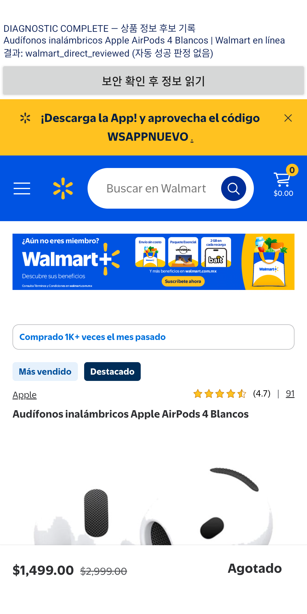

확인한 상품 정보
MX$1,499.00
| 사진 | 612×612 로드 성공 |
| 가격 근거 | 화면 표시가격 + 같은 상품 JSON-LD 일치 |
| 재고 표시 | 품절 · Agotado |
| 반복 확인 | 두 관찰의 사진·가격 일치 |
취소선 가격 2,999페소와 월 할부금 74.95페소를 주 가격에서 제외했습니다.
공식 상품 API 연결 없이 같은 WebView에서 읽었습니다. 오른쪽은 실제 실행 화면입니다. 상단의 ‘자동 성공 판정 없음’은 진단 앱 문구이며, 보고서는 수집한 데이터와 캡처를 별도로 검증한 결과입니다.
상세 검증 기록 · 원본 JSON